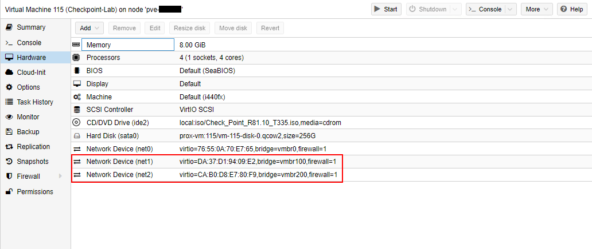

I mentioned before that I installed Proxmox so that I could train up my team. One of the technology products that I have to train on is Check Point firewalls. If you are also interested in building your own Check Point lab, whether for training or to get familiar with it, I hope this helps.
But first…
A little about Check Point
Check Point has been around as a company since 1993, and started in Israel. Check Point is the company that created the first stateful inspection firewall - Firewall-1 - and vastly improved the security of firewall products, which at the time were either proxies, or packet filters.
I’ve been administering and supporting Check Point products since 2001, and consider it to be the most mature of firewall products. Check Point focuses on security, which is why many consider them to be best-of-breed, even with all the competition that they have been facing recently, especially from Fortinet.
Anyway, enough of that.
Getting Started
As a lab, performance is not going to be end-goal here, so we’ll settle for the minimum requirements. A quick web search of “Check point Open Server minimum requirements” would yield a Check Point page showing that at minimum we’d need:
- 4 CPU cores
- 8 GB RAM
- 110 GB Hard Drive Space
- And network interfaces of course.
You will also require a Microsoft Windows client to allow you to manage the firewall.

The easiest way to find the Check Point ISO image download is to do a web search, because finding it on Check Point’s site is hopeless.
The version available at the time of writing is R81.10. Much of the guidance here will still hold for earlier versions, and hopefully for future versions. As always, check your release notes.

You will need to login or sign-up for a UserCenter account to download, which is free and simple. Download and save.

Creating the virtual machine
Once you’ve uploaded the ISO image to the virtual host (Proxmox in my case), let’s create a virtual machine.
Note: I’m using a different Proxmox install, so some of the storage locations and virtual networks are different from my previous posts.
Give the VM a name.

Use the Check Point ISO image that was downloaded and uploaded to the virtual host.

Use the default settings for the system.

For the disk, set the device as “SATA”. The Check Point install does not have drivers for the SCSI drives. It can be installed, but is unnecessary for this lab, but feel free to try and let me know.
The minimum disk size should be 110GB based on the minimum requirements; I’ve chosen 265GB.
The minimum number of cores is 4, so we’ll go with that.
The minimum amount of RAM is 8GB, so we’ll use that as well.
Specify your network interface. The wizard only allows one, but we’ll add more later. I’m using a bridged interface to my local network so that I can access the firewall from my machine.
But if you want to have your lab totally isolated, you can choose a different interface. Remember that you need a Microsoft Windows client to manage the firewall, so that will need to access the network you specify.

When you start the VM the installation will start. You will need to access the console to perform the installation.
Select your keyboard language.

Because we are using a small hard disk, keep the recommended size (Default).
Set the “admin” account password. This password is how you will login to the Gaia page, or command-line.
Set the management interface IP. This is dependent upon the virtual interface that you’ve specified.

Finally, click “OK” to start the installation process.

When installation is complete, you will be asked to reboot. Note the message to connect to the web interface to complete the configuration.
When the system reboots the console will show a login screen for the command-line interface. You can login here using the user as “admin” and the password you specified during install.
At this point though, shut down the VM so that we can add more interfaces. Remember that we’ve only added one so far, and as a firewall we’d want at least two - Internal and External.
You can login to the console and type halt or you can use the “Shutdown” button in Proxmox to shut down.

I’ve added two more interfaces - one internal and one DMZ. These are virtual interfaces to the VM host, but you choose what you want to do.

First time configuration
Once you’ve added the interfaces, start back the machine and now login using the URL as https://<management IP address>. Click continue at the “Privacy Error” page, which is due to a self-signed certificate being used.

At the login screen, use “admin” as the username, and the password that you created at the installation.
You will be greeted with the “Check Point First Time Configuration Wizard”. Click “Next” to continue.

Choose “Continue with R81.10 configuration”.

If you want to change your management interface IP you can do so.
When setting up standalone deployments (both security gateway and management in one) the standard recommendation was to use the public IP as the management IP, which becomes the object IP in Check Point (more about that in later posts).
However, I usually recommend to use the Internal IP address. Further, when you have tiered deployments (separate management and security gateways) the management IP is usually internal anyway.

Setup your next interface. The wizard only sets up two interfaces, so we’ll set up the other one later. Pay no mind about the “connect to Internet” description. I’m setting this interface up as my Internal interface.
Specify the hostname and the DNS servers to use.

Specify the date and time, or use NTP. NTP is always recommended for production, but you can go manual in the lab.

Select the installation type as “Security Gateway and/or Security Management”, as we’ll be using a standalone install.

Check both “Security Gateway” and “Security Management”.

You can create an administrative user for the Check Point management. Note that this is not for the web interface (Gaia), but for SmartConsole to manage the Check Point firewall itself.

Specify clients that can manage the Check Point firewall. As this is a lab we’re allowing everyone.

Click “Finish” to complete the wizard.

Click “Yes” to confirm.

After the configuration is completed the “Overview” page is displayed. At the left there are the sections to administer the appliance settings, which is the operating system settings.
Configure additional networks
We’ve configured only two network interfaces thus far - Internal and External. To configure the DMZ interface, go to “Network Management” –> “Network Interfaces”.
Select the interface to edit, and click on “Edit”.

Configure the settings and then check the “Enable” box to activate the interface.

The interface should now be shown as “Up” once it is connected to a virtual network, otherwise it would be shown as red and “Down” (as compared to grey and “Down”, which indicates disabled interfaces).
With all this setup, you are now ready to connect using the SmartConsole and start configuring the firewall itself, which we will go into in a next post.
Check license status
Now all this is with a trial of Check Point, which allows you to use the features for 15 days after which you need to license it. You can check your evaluation status by going to “Maintenance” –> “License Status”.